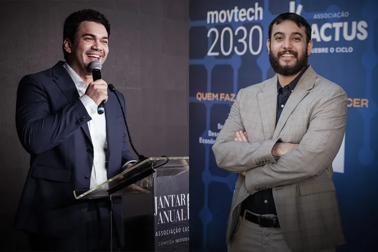

Eles criaram uma metodologia para jovens brilharem em provas
Os cearenses Victor Hill e Jefferson Viana são fundadores da Associação Cactus, ONG responsável por maratonas de preparação para a Olimpíada de Matemática das Escolas Públicas e estão ajudando cidades a melhorarem seus índices no principal indicador da educação brasileira
Autor: Vinicius Valverde
O que faz a Associação Cactus
Em comum também às duas cidades está o fato de ambas terem sido palco da atuação da Associação Cactus, uma das ONGs de maior destaque na melhoria de indicadores educacionais no país.
O foco da Associação Cactus é o de criar convênios com prefeituras interessadas em preparar os jovens de suas cidades para mandar bem nas provas da Olimpíada de Matemática. E, com consequência, melhorar de modo geral o entendimento das ciências exatas.
A história da Associação Cactus começa com Jefferson Viana e Victor Hill, dois jovens medalhistas de ouro em edições da OBMEP entre 2007 e 2011.
Ambos nasceram no Ceará em famílias de origem humilde que viram na educação uma alavanca para conquistas sociais — não só para eles, mas também para outros jovens com trajetórias semelhantes.
Os resultados na Olimpíada de Matemática
Um grupo mais seleto, de 34.000 alunos, participa de aulões e competições internas focadas no aprendizado de matemática para ter um bom desempenho na Olimpíada.
O resultado disso pode ser medido no quadro de medalhas da OBMEP. No ano passado, os alunos da Cactus conseguiram 22 medalhas de ouro, 121 de prata e 121 de bronze. Um total de 8.408 estudantes com alguma participação nas atividades da Cactus receberam menção honrosa durante a Olimpíada.
O desafio, agora, é ampliar o impacto do projeto. E, na ponta, conseguir reverter a pasmaceira nos indicadores educacionais do país.